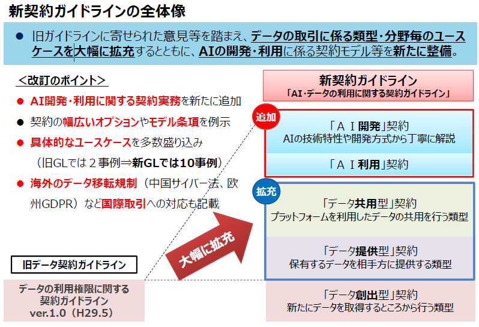
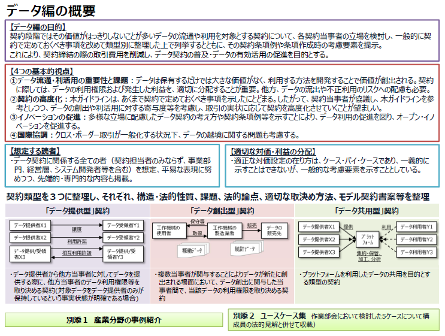
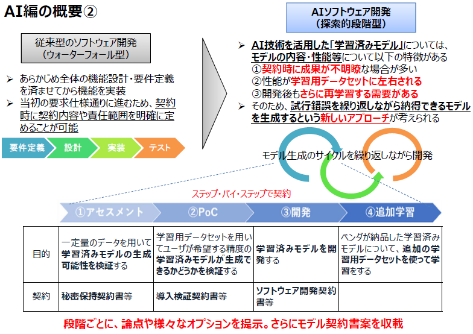
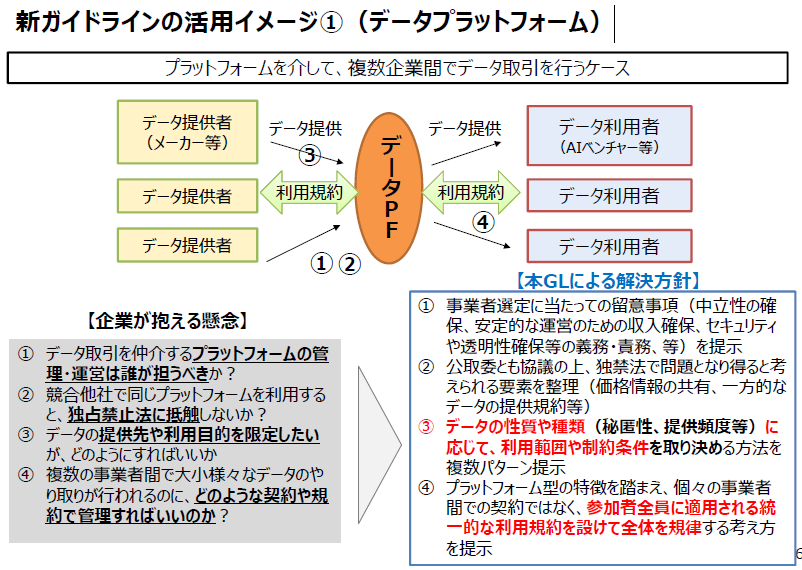
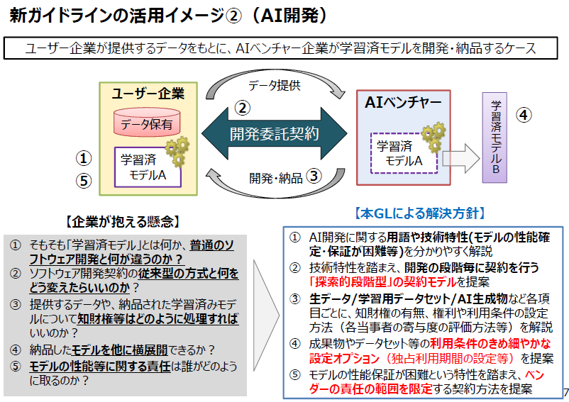

- DAX22-01 AI・データの利用に関する契約ガイドライン（概要資料）
- 改版履歴
- 【2018年6月METI】
- 新契約ガイドラインの全体像
- 
- 旧ガイドラインに寄せられた意⾒等を踏まえ、データの取引に係る類型・分野毎のユースケースを⼤幅に拡充するとともに、AIの開発・利⽤に係る契約モデル等を新たに整備。
- 【旧データ契約ガイドライン】データの利⽤権限に関する契約ガイドラインver.1.0（H29.5）
- ＜改訂のポイント＞
- AI開発・利⽤に関する契約実務を新たに追加
- 契約の幅広いオプションやモデル条項を例⽰
- 具体的なユースケースを多数盛り込み
- （旧GLでは２事例⇒新GLでは10事例）
- 海外のデータ移転規制（中国サイバー法、欧州GDPR）など国際取引への対応も記載
- 新契約ガイドライン「AI・データの利⽤に関する契約ガイドライン」
- 追加
- 「ＡＩ開発」契約
- AIの技術特性や開発⽅式から丁寧に解説
- 「ＡＩ利⽤」契約
- 拡充
- 「データ共⽤型」契約
- プラットフォームを利⽤したデータの共⽤を⾏う類型
- 「データ提供型」契約
- 保有するデータを相⼿⽅に提供する類型
- 従来
- 「データ創出型」契約
- 新たにデータを取得するところから⾏う類型
- データ編の概要
- 
- 【データ編の目的】
- 契約段階ではその価値がはっきりしないことが多いデータの流通や利⽤を対象とする契約について、
- 各契約当事者の立場を検討し、一般的に契約で定めておくべき事項を改めて類型別に整理した上で列挙するとともに、その契約条項例や条項作成時の考慮要素を提示。
- これにより、
- 契約締結の際の取引費用を削減し、データ契約の普及・データの有効活用の促進を目的とする。
- 【4つの基本的視点】
- ①データ流通・利活用の重要性と課題
- データは保有するだけでは大きな価値がなく、利用する方法を開発することで価値が創出される。
- 契約に際しては、
- データの利用権限および発生した利益を、適切に分配することが重要。
- 他方、データの流出や不正利用のリスクへの配慮も必要。
- ②契約の高度化
- 本ガイドラインは、あくまで契約で定めておくべき事項を示したにとどまる。
- したがって、契約当事者が協議し、本ガイドラインを参考としつつ、データの創出や利活用に対する寄与度等を考慮し、取引の実状に応じて契約を高度化させていくことが望ましい。
- ③イノベーションの促進
- 多様な立場に配慮したデータ契約の考え方や契約条項例等を示すことにより、データ利用の促進を図り、オープン・イノベーションを促進する。
- ④国際協調
- クロス・ボーダー取引が一般化する状況下、データの越境に関する問題も考慮する。
- 【想定する読者】
- ・データ契約に関係する全ての者（契約担当者のみならず、事業部門、経営層、システム開発者等を含む）を想定、平易な表現に努めつつ、先端的・専門的な内容も掲載。
- 【適切な対価・利益の分配】
- ・適正な対価設定の在り方は、ケース・バイ・ケースであり、一義的に示すことはできないが、一般的な考慮要素を示すこととしている。
- 契約類型を３つに整理し、それぞれ、構造・法的性質、課題、法的論点、適切な取決め⽅法、モデル契約書案等を整理
- 「データ提供型」契約
- ・データ提供者から他方当事者に対してデータを提供する際に、他方当事者のデータ利用権限等を取り決める契約
- (対象データをデータ提供者のみが保持しているという事実状態が明確である場合)
- 「データ創出型」契約
- ・複数当事者が関与することによりデータが新たに創出される場面において、データ創出に関与した当事者間で、当該データの利用権限を取り決める契約
- 「データ共⽤型」契約
- ・プラットフォームを利用したデータの供用を目的とする類型の契約
- AI編の概要①

- 【目的】
- AI ソフトウェアの特性を踏まえた上で、
- 開発・利用契約を作成するにあたっての考慮要素、
- 当事者の適切なインセンティブ形成の方法、
- トラブル予防方法等についての基本的考え方を提示。
- 当事者が納得する合理的な契約を締結するための情報を示し、契約プラクティスを形成する一助とする。
- 【AI技術の解説】
- ・基本的概念（AI、AI技術、機械学習）の説明等
- ・本ガイドラインが想定するAI技術の
- 実用化の過程学習段階（学習用データセット生成段階、学習済みモデルの生成段階）、
- 利用段階
- ●AI技術の特性
- ・学習・推論の結果、生成される学習済みモデルの性質・効果が契約締結時に不明瞭な場合が多いこと
- ・学習済みモデルの性質・効果が学習⽤データセットによって左右されること
- ・ノウハウの重要性が高いこと
- ・生成物について再利用の需要が存在すること
- 学習済みモデルの開発契約におけるポイント
- 学習済みモデルの開発類型
- 学習済みモデルのみ開発する類型、
- 学習済みモデルを含んだシステムを開発する類型、
- 学習済みモデルの開発の再受託を受ける類型
- 開発方式
- ソフトウェア開発方式（ウォータフォール型/非ウォータフォール型）
- 、学習済みモデル開発に適した開発・契約方式
- 契約における考慮要素
- 契約の法的性質、契約における交渉のポイントと留意点
- 学習済みモデルの利用契約におけるポイント
- 学習済みモデルの利用サービス類型
- ベンダが学習済モデルを提供し、ユーザが利用するサービス、
- ベンダが学習用プログラムを提供し、ユーザが利用するサービス方式等
- サービスの提供方式
- クラウドサービス型／オンプレミス型／その他
- 契約の形式
- クラウドサービス契約／ソフトウェアライセンス契約等
- 契約における考慮要素
- 学習済みモデルのカスタマイズ、入力データ、再利用モデル、AI生成物
- 国際的取引の視点
- 適用法の確定・紛争解決手段の選択
- AI技術を利用したソフトウェア開発・利用で問題となりうる事項
- データ作成段階（著作物を含む場合、パーソナルデータを含む場合、表明保証条項の活用）
- 学習済みモデルの開発段階（権利帰属、リバースエンジニアリングの禁止）
- 学習済みモデルの利用段階（外為法・技術輸出⼊規制）
- モデル契約書案と解説
- 探索的段階型開発を想定したそれぞれの段階における契約
- 秘密保持契約書、
- 導⼊検証契約書、
- ソフトウェア開発契約書
- 別添ユースケース集
- 作業部会において検討した5ケースについて構成員の法的⾒解と併せて収載
- AI編の概要②
- 
- 従来型のソフトウェア開発（ウォーターフォール型）
- ・あらかじめ全体の機能設計・要件定義を済ませてから機能を実装
- ・当初の要求仕様通りに進むため、契約時に契約内容や責任範囲を明確に定めることが可能
- AIソフトウェア開発（探索的段階型）
- ・AI技術を活用した「学習済みモデル」については、モデルの内容・性能等について以下の特徴がある
- ①契約時に成果が不明瞭な場合が多い
- ②性能が学習⽤データセットに左右される
- ③開発後もさらに再学習する需要がある
- ・そのため、試行錯誤を繰り返しながら納得できるモデルを生成するという新しいアプローチが考えられる
- モデル生成のサイクルを繰り返しながら開発
- ステップ・バイ・ステップで契約
- ①アセスメント
- ⼀定量のデータを⽤いて学習済みモデルの⽣成可能性を検証する
- 秘密保持契約書等
- ②PoC（Proof of Concept）
- 学習⽤データセットを⽤いてユーザが希望する精度の学習済みモデルが⽣成できるかどうかを検証する
- 導⼊検証契約書等
- ③開発
- 学習済みモデルを開発する
- ソフトウェア開発契約書等
- ④追加学習
- ベンダが納品した学習済みモデルについて、追加の学習⽤データセットを使って学習をする
- 段階ごとに、論点や様々なオプションを提⽰。さらにモデル契約書案を収載
- 新ガイドラインの活⽤イメージ①（データプラットフォーム）
- 
- プラットフォームを介して、複数企業間でデータ取引を行うケース
- 【企業が抱える懸念】
- ① データ取引を仲介するプラットフォームの管理・運営は誰が担うべきか︖
- ② 競合他社で同じプラットフォームを利用すると、独占禁示法に抵触しないか︖
- ③ データの提供先や利用目的を限定したいが、どのようにすればいいか
- ④ 複数の事業者間で大小様々なデータのやり取りが行われるのに、どのような契約や規約で管理すればいいのか︖
- 【本GLによる解決方針】
- ① 事業者選定に当たっての留意事項（中立性の確保、安定的な運営のための収⼊確保、セキュリティや透明性確保等の義務・責務、等）を提示
- ② 公取委とも協議の上、独禁法で問題となり得ると考えられる要素を整理（価格情報の共有、一方的なデータの提供規約等）
- ③ データの性質や種類（秘匿性、提供頻度等）に応じて、利用範囲や制約条件を取り決める方法を複数パターン提示
- ④ プラットフォーム型の特徴を踏まえ、個々の事業者間での契約ではなく、参加者全員に適用される統一的な利用規約を設けて全体を規律する考え方を提示
- 新ガイドラインの活⽤イメージ②（AI開発）
- 
- ユーザー企業が提供するデータをもとに、AIベンチャー企業が学習済モデルを開発・納品するケース
- 【企業が抱える懸念】
- ① そもそも「学習済モデル」とは何か、普通のソフトウェア開発と何が違うのか︖
- ② ソフトウェア開発契約の従来型の方式と何をどう変えたらいいのか︖
- ③ 提供するデータや、納品された学習済みモデルについて知財権等はどのように処理すればいいのか︖
- ④ 納品したモデルを他に横展開できるか︖
- ⑤ モデルの性能等に関する責任は誰がどのように取るのか︖
- 【本GLによる解決方針】
- ① AI開発に関する用語や技術特性(モデルの性能確定・保証が困難等)を分かりやすく解説
- ② 技術特性を踏まえ、開発の段階毎に契約を行う「探索的段階型」の契約モデルを提案
- ③ 生データ/学習⽤データセット/AI生成物など各項目ごとに、知財権の有無、権利や利用条件の設定方法（各当事者の寄与度の評価方法等）を解説
- ④ 成果物やデータセット等の利用条件のきめ細やかな設定オプション（独占利用期間の設定等）を提案
- ⑤ モデルの性能保証が困難という特性を踏まえ、ベンダーの責任の範囲を限定する契約方法を提案